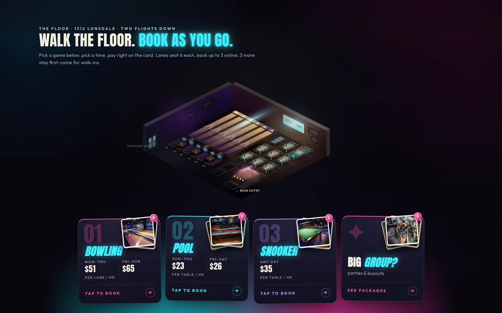
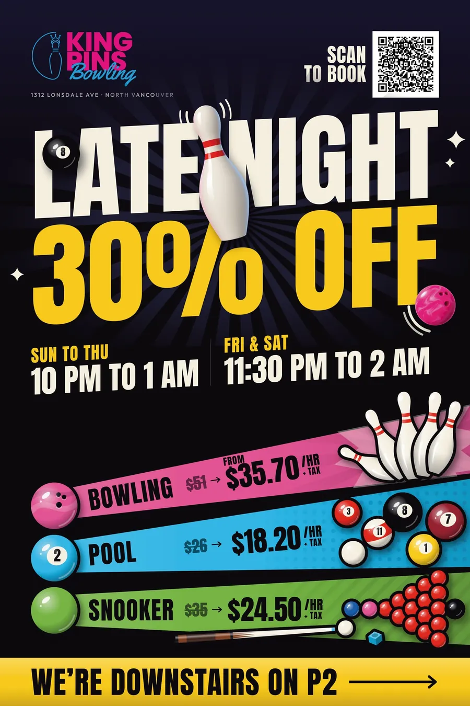

the floor.
Book from a map of the real venue.
Guests pick bowling, pool or snooker on an isometric map of the floor, then a time, then pay on the same card.

- Guests start on a map of the real floor and pick where they'll play.
- Lanes seat six. Three book online and three stay free for walk-ins.
- Weekday and weekend prices come straight from the venue's rate card.
the rules.
Real hours decide what's bookable.
Opening hours, kitchen hours and holiday closures live in one rules file that the website and the server both read.
Party packs can't start before the kitchen opens at 5 PM, and the site says so. A slot that just disappears looks broken. A slot with a reason doesn't.

3d and motion.
A floor plan that zooms to where you'll play.
The isometric map is an SVG. Pick an activity and GSAP eases the view into that zone, dims the rest of the floor and floats a real photo of it.


Left: the full floor. Right: after choosing snooker.
brand.
I run the venue's brand too.
Posters, sandwich boards and Instagram content, all in the same look as the site.



what's next.
Lane-linked food orders, then tournaments.
QR ordering tied to the lane booking, so food orders reach the kitchen already tagged to the right lane. The venue's Clover till can't do that.
After that, events: tournaments, a live leaderboard and a what's-on listing. Sign-ups for the first tournaments are already open.